Mixed-Signal VLSI
Low-Power CMOS Multi-Sensor Threshold Classifier
Cadence Virtuoso · GPDK 90 nm · Spectre/ADE · Assura DRC / LVS / RCX
Three analog inputs (Vgas, Vhum, Vtemp) pull down a shared node through NMOS devices of width 4 : 2 : 1 µm, so the widths act as input weights. A PMOS load and a CMOS inverter turn the weighted decision into a digital alarm. Built for an EEE 4861 assignment at 1 V supply.
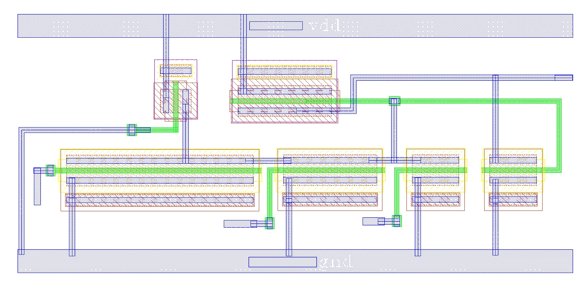
Design
Weights are physical: a wider NMOS conducts more current for the same input voltage and so pulls the internal node down harder. The output inverter (PMOS 2 µm / NMOS 1 µm) sharpens the decision into a rail-to-rail alarm.
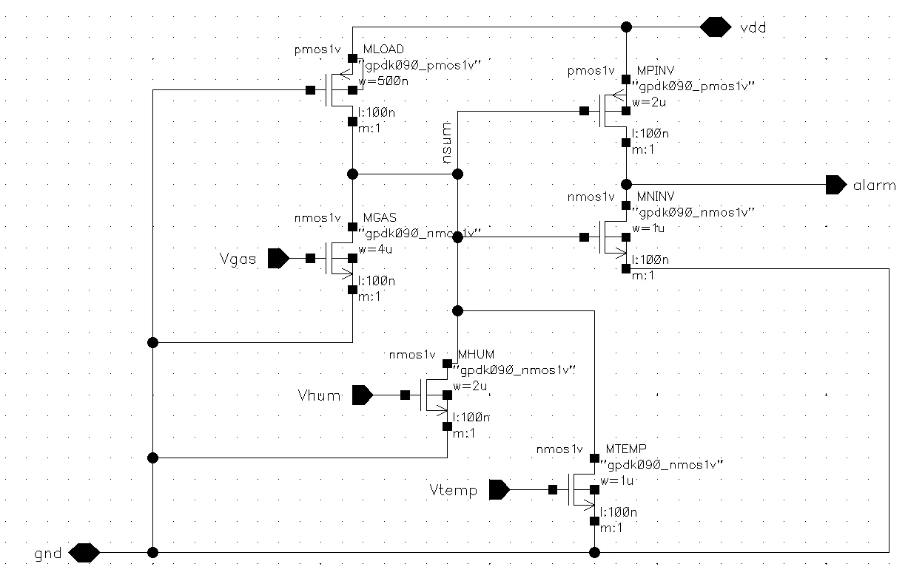
DC and transient behavior
One input is swept 0 → 1 V with the others held low. The switching point moves with the width of the swept device, confirming the 4 : 2 : 1 weighting.
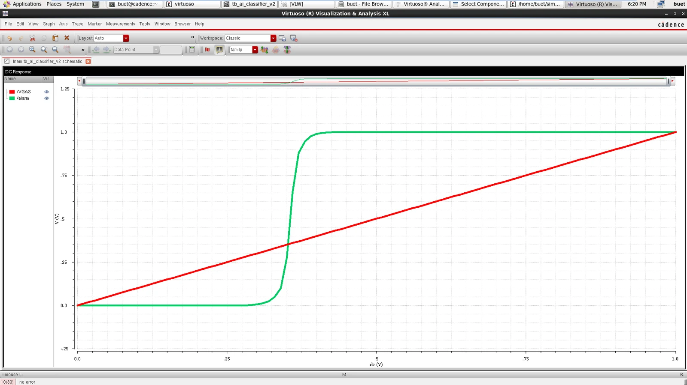
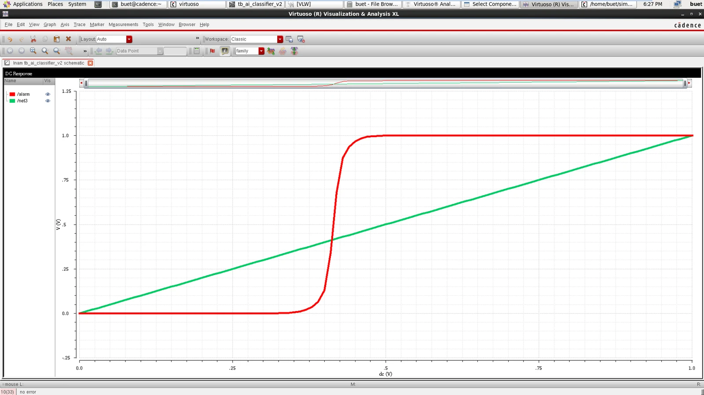
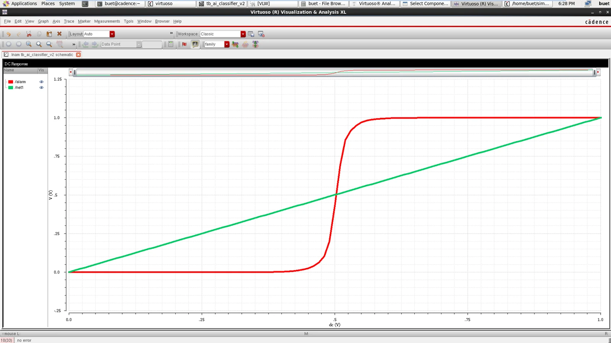
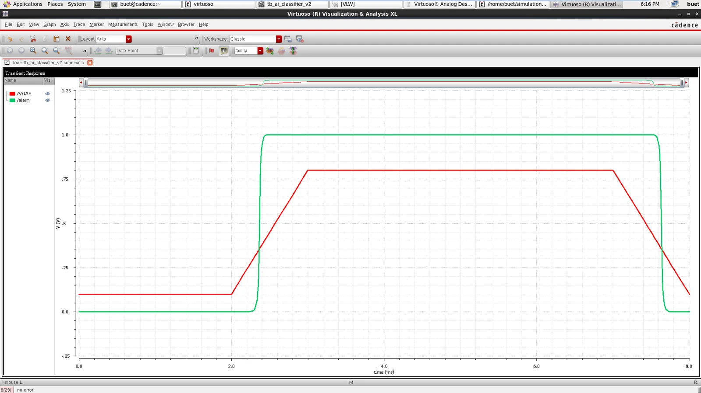
Power
Why 105.4 µW for six transistors? The decision node is a ratioed pull-up / pull-down, so in the alarm state the PMOS load and the pulled-down NMOS conduct together (≈145–150 µW static). The 105.4 µW figure is the average over the specific 0–8 ms input pattern and is not a lifetime number.
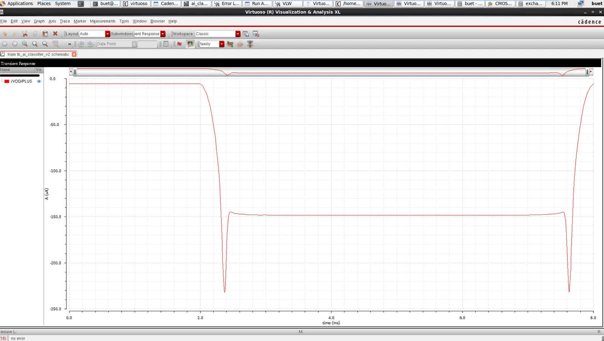
Layout and verification
Layout followed standard CMOS arrangement with tied body contacts. The first DRC run reported three spacing/width errors; after correction DRC is clean, LVS matches and Assura RCX produced av_extracted.
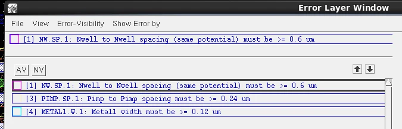
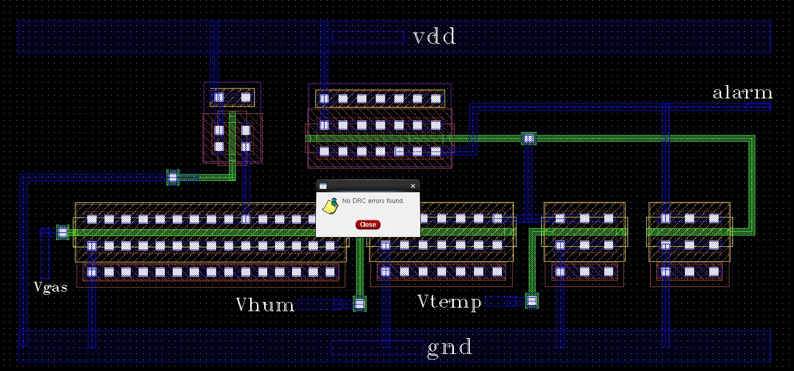
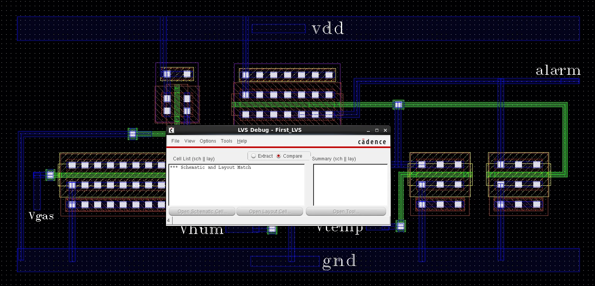
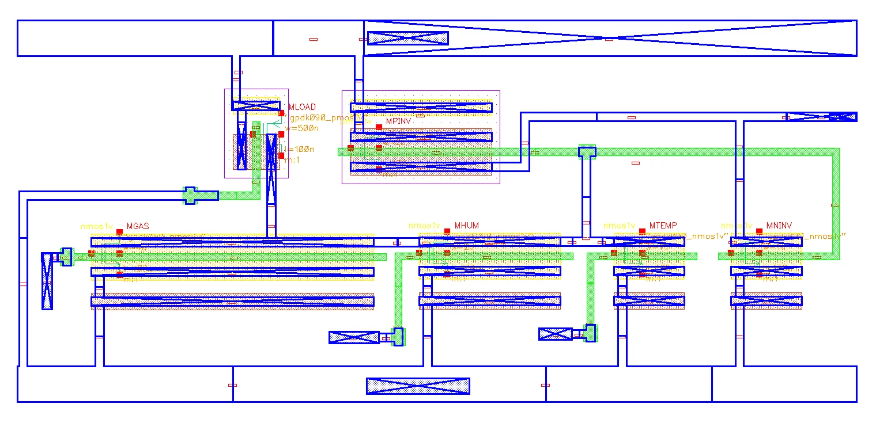
Scope and limitations
- No PVT-corner or Monte Carlo analysis; no post-layout simulation from the extracted view.
- No GDSII tapeout package, pad ring or ESD protection; no silicon measurement.
- Power applies only to the simulated input pattern.